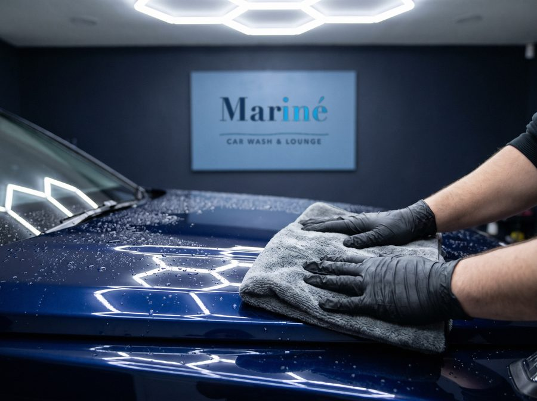
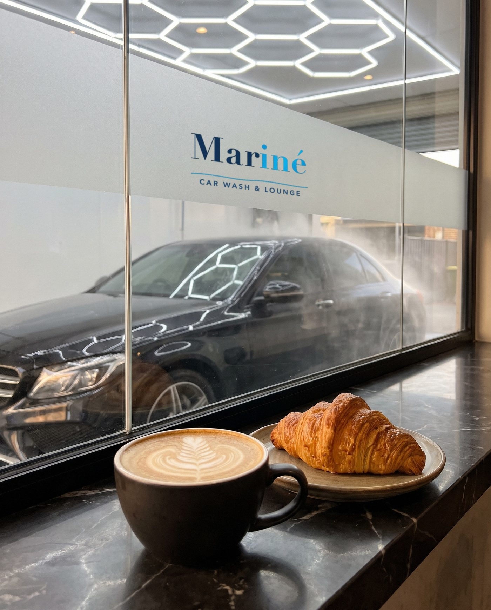
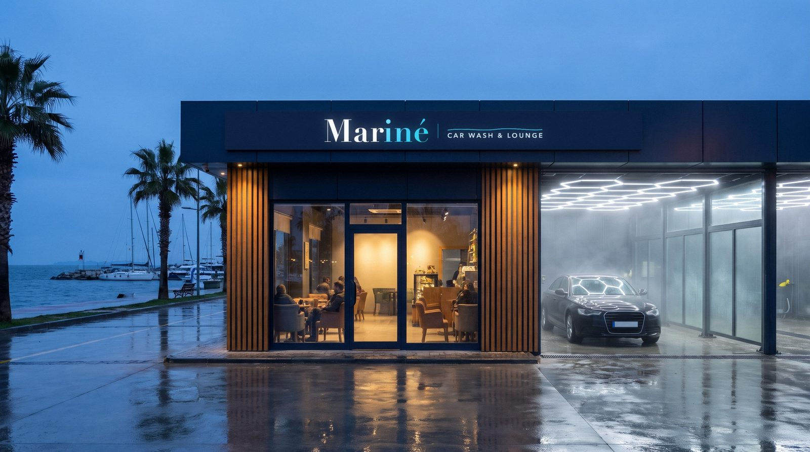
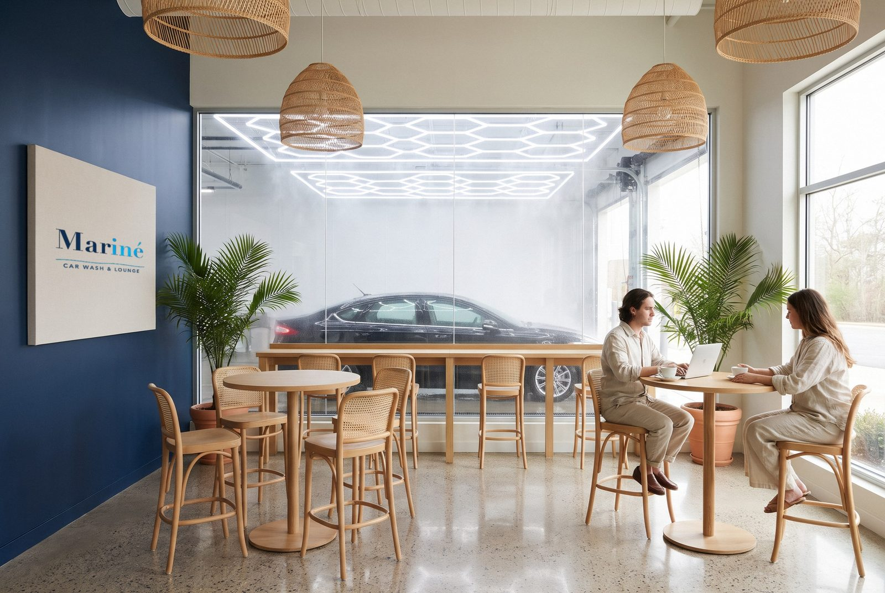
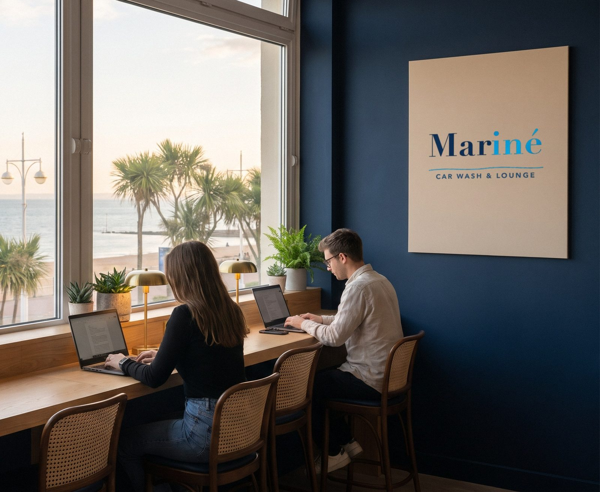

Fırça değmeden yıkıyoruz.
Denizköşkler sahilinde. Aracınız nötr köpük ve arıtılmış suyla yıkanırken siz cam bölmenin arkasında kahvenizi için.
Fiyatlar
Fiyat araç tipine göre değişir, yıkamadan sonra tesiste ödenir. Listede ne yazıyorsa onu ödersiniz.
| Paket | Süre | Binek sedan, hatchback | SUV crossover | Pick-up, van |
|---|---|---|---|---|
İç-dış yıkama
Neler yapılıyor
|
45 dk | 450 ₺ | 550 ₺ | 700 ₺ |
Detaylı yıkama ve sıvı seramik
Neler yapılıyor
|
75 dk | 850 ₺ | 1.050 ₺ | 1.300 ₺ |
Detaylı iç temizlik
Neler yapılıyor
|
4 saat | 3.500 ₺ | 4.250 ₺ | 5.450 ₺ |
Binanın sahibi biziz; kira ödemediğimiz için fiyatları sahil şeridindeki benzerlerinin altında tutabiliyoruz.
Seramik kaplamalı ve PPF folyolu araçları da aynı yöntemle yıkıyoruz, fırça ve sünger kullanmıyoruz.
Randevu alNasıl yıkıyoruz
Her araçta aynı dört adım. Aracınızı lounge'daki camdan izleyebilirsiniz.
-
Köpük
Önce nötr pH'lı yoğun köpük. Birkaç dakika bekleyip kiri yumuşatır, sonra boyaya fırça ya da sünger değmeden akıp gider. Seramik kaplama ve PPF folyo için de güvenli.
-
Arıtılmış suyla durulama
Şebeke suyundaki kireç, kuruyunca boyada beyaz halkalar bırakır. Durulamayı arıtılmış suyla yapıyoruz; damlalar iz bırakmadan kurur.
-
Elle kurulama ve iç temizlik
Gövde ve jant için ayrı mikrofiber bezler. Ayna ve fitil aralarındaki suyu basınçlı havayla alıyoruz. İçeride süpürge, torpido, camlar ve paspaslar.

-
Kontrol ve teslim
Son kontrolü ışık altında yapıp anahtarı size veriyoruz. Kartınıza damga basılır, beşinci iç-dış yıkama bizden. Kartınız yanınızda değilse plakanızdan da sayarız.

Beklerken
Bir şey sipariş etmek zorunda değilsiniz. Wi-Fi ücretsiz, masalarda priz var, cam bölmeden aracınızı görebilirsiniz.
Wi-Fi Marine_Lounge
Sahil yolunun üstünde
Denizköşkler'de, yürüyüş yolunun karşısında. Yıkama peronu ile kafe aynı çatı altında, aralarında cam bölme var.



Randevu al
Saati seçin, bilgilerinizi yazın. Randevu kaydedilir ve özeti WhatsApp'tan bize gönderebilirsiniz. Siteden ödeme alınmaz.
Sık sorulanlar
Beklerken bir şey sipariş etmem gerekiyor mu?
Hayır. Salonda oturabilir, Wi-Fi'ı kullanabilir, aracınızı camdan izleyebilirsiniz. Kafe menüsü isteyene.
Ödemeyi nasıl yapıyorum?
Yıkamadan sonra tesiste. Siteden ödeme alınmaz; fiyat listesindeki tutarın üstüne bir şey eklenmez.
Sadakat kartı nasıl çalışıyor?
Her iç-dış yıkamada kartınıza bir damga basılır, kayıt plakanıza da işlenir. Dört damgadan sonra beşinci iç-dış yıkama ücretsizdir. Detaylı iç temizlik iki damga sayılır.
Fırça ya da kuyu suyu kullanıyor musunuz?
Hayır. Köpük ve basınçlı suyla yıkayıp mikrofiber bezle kuruluyoruz. Durulama suyu arıtılmış sudur, kireç bırakmaz.
Tam olarak neredesiniz?
Avcılar, Denizköşkler Mahallesi, sahil yolu üzeri. Haritada açın.